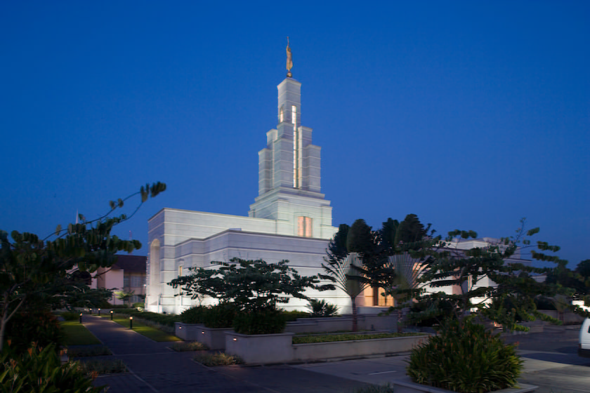

Álbum do Templo
Página Inicial
|
Antigo
|
Novo
|
Grande
|
Pequeno
Página Inicial

TEMPLO GRANDE
TEMPLO ABA NIGERIA
TEMPLO LAGO SALGADO
TEMPLO COSTA DO MARFIM
TEMPLO GRANDE
TEMPLO ABA NIGERIA
TEMPLO LAGO SALGADO
TEMPLO ABIDJA
TEMPLO ABIDJA